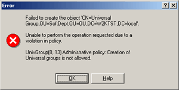

This topic provides you with a sample policy script, and details how to implement and use it with Active Roles.
To apply a policy script
-
Register a script module on the Administration Service.
-
Create a Policy Object.
-
Add the script module to the Policy Object.
-
Link the Policy Object to a directory folder or Managed Unit.
For more information about Policy Objects, refer to the Active Roles Administrator's Guide.
Prohibit the Creation of Universal Groups
Using the following script, you can easily implement a Policy Object that prohibits the creation of universal groups within a certain OU.
[VBScript] Sub onPreCreate(Request) Dim strObjClass, lngGroupType Const strError = "Creation of Universal groups is not allowed." strObjClass = CStr(Request.Class) If StrComp(strObjClass, "group", 1) = 0 Then lngGroupType = CLng(Request.Get("groupType")) If (lngGroupType AND ADS_GROUP_TYPE_UNIVERSAL_GROUP) Then Err.Raise 1, "Administrative policy", strError End If End If End Sub
[PowerShell] function onPreCreate($Request) { $ADS_GROUP_TYPE_UNIVERSAL_GROUP = 0x00000008 $strError = "Creation of Universal groups is not allowed." $strObjClass = $Request.Class if ($strObjClass -eq "group") { $lngGroupType = [long]$Request.Get("groupType") if ($lngGroupType -band $ADS_GROUP_TYPE_UNIVERSAL_GROUP) { throw "Administrative policy`n$strError" } } }
Before preparing a Policy Object that includes a script policy, you should register a script module on the Administration Service with the following procedure.
To register a script module
-
Save your script into a text file.
-
In the console tree, under the Active Roles snap-in item, expand the Configuration node.
-
Under Configuration, right-click Script Modules, and then click Import on the shortcut menu.
-
Select the script file using the Import Script dialog box.
To prepare a Policy Object
-
In the console tree, under the Active Roles snap-in item, expand the Configuration node.
-
Under Configuration, expand the Policies node, right-click Administration, point to New, and then click Provisioning Policy Object to start the New Provisioning Policy Object wizard.
-
On the Name and Description page, under Name and Description, specify the name and description of the Policy Object you want to create, and then click Next.
-
On the Policy to Configure page, select Script Execution, and then click Next.
-
On the Script Module page, select the script module you want the Policy Object to include, and then click Next.
-
Follow the provided instructions to complete the wizard.
After the Policy Object is prepared, you can link it to an Organizational Unit and try to create a Universal group in that Organizational Unit. Active Roles will not allow the creation, presenting you with the error message box like follows:

 Related Topics
Related Topics{kind=link}